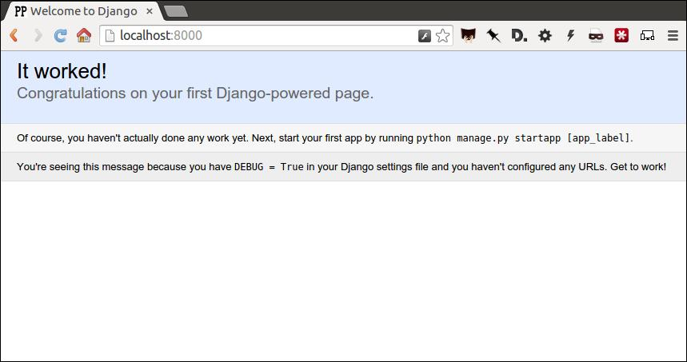
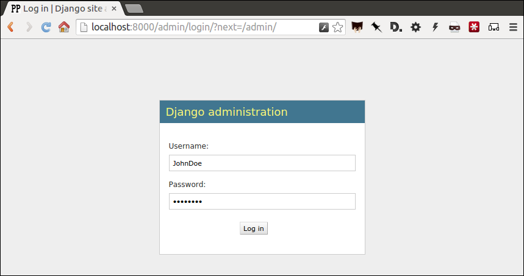
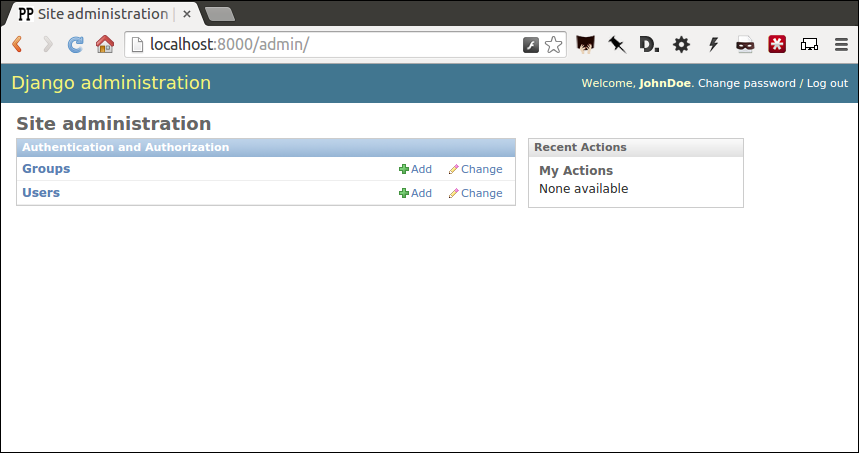
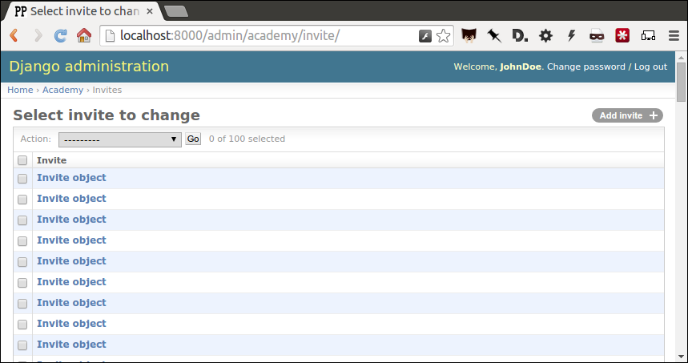
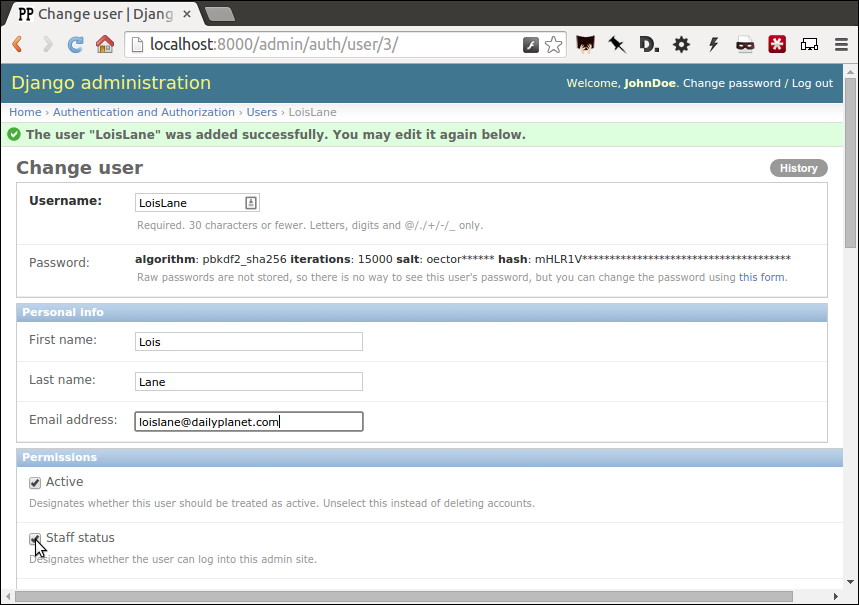

First Django admin¶
A step-by-step guide to creating a simple web application that empowers you to enlist reporters in data entry and refinement.
You will learn just enough about the Django framework to design database tables, load in data and create an administration panel for others to improve it. You will not bother with all the other web developer crap.
What you will make¶
This tutorial will guide you through creating a custom Django administration panel where reporters can inspect, edit and augment a list of invitees to the Academy of Motion Picture Arts and Sciences, the elite organization that decides the Oscars.

In 2012, a study by the Los Angeles Times found that the group is overwhelmingly white and male, which led to renewed calls to diversify the Oscar voting pool. A new list was used to write a follow-up story in 2013. The analysis appeared on the front page again in early 2015 when the academy was criticized after announcing a virtually all-white slate of nominees.
In the steps below, you will repeat The Times’ work using the academy’s 2014 invitation list, creating a system to share the load of producing a follow-up story in the vein of this 2016 update to the original analysis.
You are following in the footsteps of Times reporters Sandra Poindexter and Doug Smith, who developed a similar administration panel as part of their investigation. They were inspired by a presentation made by Matt Wynn at a past conference of The National Institute for Computer-Assisted Reporting.
About the authors¶
This guide was developed by Ben Welsh and Ken Schwencke for a workshop on March 8 at the 2015 conference of the National Institute for Computer-Assisted Reporting (NICAR) in Atlanta. A modified version was presented at the 2016 NICAR conference on March 13.
Dana Amihere will co-teach this as a hands-on workshop March 5, 2017 at the annual NICAR conference in Jacksonville, Fla. Click here for more details and to sign up.
Prelude: Prerequisites¶
Before you can begin, your computer needs the following tools installed and working.
- A command-line interface to interact with your computer
- A text editor to work with plain text files
- Version 2.7 of the Python programming language
- The pip package manager and virtualenv environment manager for Python
Warning
Stop and make sure you have all these tools installed and working properly. Otherwise, you’re gonna have a bad time.
Command-line interface¶
Unless something is wrong with your computer, there should be a way to open a window that lets you type in commands. Different operating systems give this tool slightly different names, but they all have some form of it, and there are alternative programs you can install as well.
On Windows you can find the command-line interface by opening the “command prompt.” Here are instructions. On Apple computers, you open the “Terminal” application. Ubuntu Linux comes with a program of the same name.
Text editor¶
A program like Microsoft Word, which can do all sorts of text formatting such as change the size and color of words, is not what you need. Do not try to use it below.
You need a program that works with simple “plain text” files, and is therefore capable of editing documents containing Python code, HTML markup and other languages without dressing them up by adding anything extra. Such programs are easy to find and some of the best ones are free, including those below.
For Windows, I recommend installing Notepad++. For Apple computers, try TextWrangler. In Ubuntu Linux you can stick with the pre-installed gedit text editor.
Python¶
Python is a computer programming language, like many others you may have heard of like Ruby or PHP or Java. It is free and open source. To continue to with this class, you will need to have version 2.7 installed.
For Apples¶
If you are using Mac OSX, Python version 2.7 is probably already installed and you can test to see what version, if any, is already available by typing the following into your terminal.
$ python -V
Note
You’ll note that the example above begins with a “$”. You do not need to type this. It is only a generic symbol
commonly used by geeks to indicate a piece of code should be run from the command line. On Windows, this prompt could even look quite different, likely starting with a phrase like C:\.
You should see something like this after you hit enter:
$ python -V
Python 2.7.12
If you get an error instead, Mac users should install Python by following these instructions offered by The Hitchhikers Guide to Python.
If your version is 2.7.11 or 2.7.13 or some other slight variation from what’s above, that’s okay. If it’s Python 3, that’s another issue and you should try to install Python 2.7 instead. If you continue with Python 3, this class may largely work, but you could encounter some small problems you’ll need to sort out on your own.
For Windows¶
Just like Apple users, Windows people should open their command prompt and investigate whether Python is already installed.
python -V
You should see something like this after you hit enter:
python -V
Python 2.7.12
If not Windows users can find a similar installation guide here which will have you try downloading and installing Python from here. After that’s done, ensure Python is installed by reopening the command prompt and running the command above again.
pip and virtualenv¶
The pip package manager makes it easy to install open-source libraries that expand what you’re able to do with Python. Later, we will use it to install everything needed to create a working web application.
If you don’t have it already, you can get pip by following these instructions.s
Verify pip is installed with the following command:
$ pip -V
The virtualenv environment manager makes it possible to create an isolated corner of your computer where all the different tools you use to build an application are sealed off.
It might not be obvious why you need this, but it quickly becomes important when you need to juggle different tools for different projects on one computer. By developing your applications inside separate virtualenv environments, you can use different versions of the same third-party Python libraries without a conflict. You can also more easily recreate your project on another machine, handy when you want to copy your code to a server that publishes pages on the Internet.
You can check if virtualenv is installed with the following command:
$ virtualenv --version
If you don’t have virtualenv, install it with pip.
# On Windows:
$ pip install virtualenv
# On a Mac or Linux you will need to install it as a superuser with the sudo command.
# When you are prompted for a password, use the same one that logs you into your computer
$ sudo pip install virtualenv
If that doesn’t work, try following this advice.
Act 1: Hello Django¶
Start by creating a new development environment with virtualenv. Name it after our application.
# You don't have to type the "$" It's just a generic symbol
# geeks use to show they're working on the command line.
$ virtualenv first-django-admin
Jump into the directory it created.
$ cd first-django-admin
Turn on the new virtualenv, which will instruct your terminal to only use those libraries installed inside its sealed space. You only need to create the virtualenv once, but you’ll need to repeat these “activation” steps each time you return to working on this project.
# In Linux or Mac OSX try this...
$ . bin/activate
# In Windows it might take something more like...
$ cd Scripts
$ activate
$ cd ..
Use pip on the command line to install Django, a Python “framework”
we’ll use to put together our website.
$ pip install Django
Now use Django’s django-admin command to create a new “project” that will be organized according to the framework’s rules.
$ django-admin startproject project
Now jump into the project and we’ll start setting it up.
$ cd project
Note
Run the ls command (dir on Windows), which lists the files in your current location. Wonder what all those weird files are in your new directory? We’ll only need a couple for this tutorial, but you can read about all of them in the official Django documentation.
There is a lot of configuration that could be done at this point, but we’re going to advance with all of the Django defaults in place.
The first step is creating your database, which will appear as a new SQLite file named db.sqlite3.
To do that, we will start using the manage.py` file created by ``startproject. It is a utility belt we can use to make Django a wide range of things. The command we want now, migrate, can create database tables.
$ python manage.py migrate
Fire up Django’s built-in web server.
$ python manage.py runserver
Visit localhost:8000 in your browser to see Django in action. Here’s what you should see.
Congratulations. You’ve installed Django and have a blank site started up and running. Now the real work begins.
Act 2: Hello models¶
Now we create our app. In Django terms, an app is a collection of files that does something, like publish a blog or store public records. A project, like we made above, collects those apps and organizes them into a working website.
You can create a new app with Django’s ``startapp` command. Since we are aiming to make a list of people invited to join the academy, naming this one isn’t too hard.
Return to your terminal and hit the combination of CTRL-C, which will terminal your test server and return you to the command line. Then use our friend manage.py to create our app.
$ python manage.py startapp academy
There should now be a new academy folder in your project. If you look inside you will see that Django created a series of files common to every app.
academy/
__init__.py
admin.py
apps.py
migrations/
models.py
tests.py
views.py
We will only be using two of them in this tutorial. The file called models.py is where we will design our database tables. Another called admin.py is where we will configure the panels where reporters will be able to enrich the source data.
But before we do any of that, we need to configure out project to include our new app. Use your text editor to open the file settings.py in the project directory. Add our app, academy, to the INSTALLED_APPS list you find there.
INSTALLED_APPS = (
'django.contrib.admin',
'django.contrib.auth',
'django.contrib.contenttypes',
'django.contrib.sessions',
'django.contrib.messages',
'django.contrib.staticfiles',
'academy',
)
Note
Python, like most programming language, is very strict. When you add a new word to a list, as we did above, it always needs to be followed by a comma and surrounded by quotes. The identatations are also very stict and need to be consistent from line to line. Also, lines starting with # or surrounding by “”“ quotes are comments that will not be run as code and are instead there only as documentation.
Next open up the models.py file in the academy app’s directory. Here we will use Django’s built-in models system to design a database table to hold the source data.
Each table is defined using a Python class that inherits special powers from Django. Those special powers allow it to syncronize with an underlying database. Our work begins by creating our class and naming it after the data we’ll put inside.
from __future__ import unicode_literals
from django.db import models
# Create your models here.
class Invite(models.Model):
Note
Don’t know what a class is? Don’t stress out about it. It’s a little tricky to explain, but a class is basically a blueprint for designing how information in your code is structured. In our case, we’re creating a blueprint that will link up our data with a traditional database table (this is often called a schema).
Next, like any good database table, it needs some fields.
If you open the source CSV, you will see that is has only two columns: name and branch.
Django has some fancy tricks for defining fields depending on what kind of data they hold. Now we’ll use the CharField to expand our models to hold the name and branch data from our source. It just so happens, that CharFields have a maximum length that must always be set. We’re going to pick a couple big numbers for that.
from __future__ import unicode_literals
from django.db import models
# Create your models here.
class Invite(models.Model):
name = models.CharField(max_length=500)
branch = models.CharField(max_length=500)
Note
Watch out. You’ll need to carefully indent your code according to Python’s very strict rules for this to work.
Now let’s add a few more fields that we will ask the reporters to figure out and fill in. We’ll use another Django trick, the choices option, to make some of them are multiple-choice fields rather than free text.
First gender.
from __future__ import unicode_literals
from django.db import models
# Create your models here.
class Invite(models.Model):
name = models.CharField(max_length=500)
branch = models.CharField(max_length=500)
GENDER_CHOICES = (
("M", "Male"),
("F", "Female"),
("O", "Other"),
("?", "Unknown")
)
gender = models.CharField(
max_length=1,
choices=GENDER_CHOICES,
default="?"
)
Note
When you create a choices list each option needs to have two values. The first one is what is written into the database, and is often more compact. the second one is what is displayed for user, and is often more verbose.
Then the invitee’s date of birth. Since this type of field will start off empty we need to instruct the database to: 1) allow null values with null=True and 2) allow entrants to leave it empty when they update records later with blank=True.
from __future__ import unicode_literals
from django.db import models
# Create your models here.
class Invite(models.Model):
name = models.CharField(max_length=500)
branch = models.CharField(max_length=500)
GENDER_CHOICES = (
("M", "Male"),
("F", "Female"),
("O", "Other"),
("?", "Unknown")
)
gender = models.CharField(
max_length=1,
choices=GENDER_CHOICES,
default="?"
)
date_of_birth = models.DateField(null=True, blank=True)
Race.
from __future__ import unicode_literals
from django.db import models
# Create your models here.
class Invite(models.Model):
name = models.CharField(max_length=500)
branch = models.CharField(max_length=500)
GENDER_CHOICES = (
("M", "Male"),
("F", "Female"),
("O", "Other"),
("?", "Unknown")
)
gender = models.CharField(
max_length=1,
choices=GENDER_CHOICES,
default="?"
)
date_of_birth = models.DateField(null=True, blank=True)
RACE_CHOICES = (
("ASIAN", "Asian"),
("BLACK", "Black"),
("LATINO", "Latino"),
("WHITE", "White"),
("OTHER", "Other"),
("?", "Unknown"),
)
race = models.CharField(
max_length=10,
choices=RACE_CHOICES,
default="?"
)
Finally, an open-ended text field for reporters to leave notes about their decisions.
from django.db import models
# Create your models here.
class Invite(models.Model):
name = models.CharField(max_length=500)
branch = models.CharField(max_length=500)
GENDER_CHOICES = (
("M", "Male"),
("F", "Female"),
("O", "Other"),
("?", "Unknown")
)
gender = models.CharField(
max_length=1,
choices=GENDER_CHOICES,
default="?"
)
date_of_birth = models.DateField(null=True, blank=True)
RACE_CHOICES = (
("ASIAN", "Asian"),
("BLACK", "Black"),
("LATINO", "Latino"),
("WHITE", "White"),
("OTHER", "Other"),
("?", "Unknown"),
)
race = models.CharField(
max_length=10,
choices=RACE_CHOICES,
default="?"
)
notes = models.TextField(blank=True)
Congratulations, you’ve written your first model. But it won’t be created as a real table in your database until you run what Django calls a “migration.” That’s just a fancy word for syncing our models with our database.
Make sure to save your models.py``file. Then we'll ``manage.py to prepare the changes necessary to create your new model.
$ python manage.py makemigrations academy
Now run the migrate command to execute it.
$ python manage.py migrate academy
That’s it. You’ve made your database table.
Act 3: Hello loader¶
Our next challenge is to load the source CSV file into the model.
We are going to do this using Django’s system for management commands. It allows us to make our own manage.py commands like migrate and startapp that take advantage of Django’s bag of tricks and interact with the database.
To do this, add a management/commands directory in our academy app, complete with empty __init__.py files required by Python. You can do this in your operating system’s file explorer, or on the command line. From a Linux or OSX prompt that would look something like this.
# The -p flag here makes both new directories
$ mkdir -p academy/management/commands
# This creates the empty files on Macs or in Linux
$ touch academy/management/__init__.py
$ touch academy/management/commands/__init__.py
From Windows something more like this:
# If you're in Windows create them with your text editor
$ start notepad++ academy/management/__init__.py
$ start notepad++ academy/management/commands/__init__.py
When you’re done the app’s directory should look something like this.
academy/
__init__.py
admin.py
apps.py
models.py
management/
__init__.py
commands/
__init__.py
migrations/
tests.py
views.py
Create a new file in the management/commands directory where the new command will go. Let’s call it loadacademycsv.py.
# Mac or Linux
$ touch academy/management/commands/loadacademycsv.py
# Windows
$ start notepad++ academy/management/commands/loadacademycsv.py
Open it up and paste in the skeleton common to all management commands.
from django.core.management.base import BaseCommand
class Command(BaseCommand):
def handle(self, *args, **options):
print "Loading CSV"
Running its is as simple as invoking its name with manage.py.
$ python manage.py loadacademycsv
Download the source CSV file from GitHub and store in your base directory next to manage.py.
Return to the management command and introduce Python’s built-in csv module, which can read and files CSV files.
import csv
from django.core.management.base import BaseCommand
class Command(BaseCommand):
def handle(self, *args, **options):
print "Loading CSV"
Next add a variable beneath the print command that contains the path to where you’ve saved the CSV file. If you’ve saved it next to manage.py, that is as simple as starting off with ”./”.
import csv
from django.core.management.base import BaseCommand
class Command(BaseCommand):
def handle(self, *args, **options):
print "Loading CSV"
csv_path = "./academy_invites_2014.csv"
Note
In case you don’t already know a “variable” is a fancy computer programming word for a named shortcut where we save our work as we go.
Now access the file at that path with Python’s built-in open function.
import csv
from django.core.management.base import BaseCommand
class Command(BaseCommand):
def handle(self, *args, **options):
print "Loading CSV"
csv_path = "./academy_invites_2014.csv"
csv_file = open(csv_path, 'rb')
Feeding the file object it creates into the csv module’s DictReader will return a list with each row read to work with.
import csv
from django.core.management.base import BaseCommand
class Command(BaseCommand):
def handle(self, *args, **options):
print "Loading CSV"
csv_path = "./academy_invites_2014.csv"
csv_file = open(csv_path, 'rb')
csv_reader = csv.DictReader(csv_file)
Create a loop that walks through the list, printing out each row as it goes by.
import csv
from django.core.management.base import BaseCommand
class Command(BaseCommand):
def handle(self, *args, **options):
print "Loading CSV"
csv_path = "./academy_invites_2014.csv"
csv_file = open(csv_path, 'rb')
csv_reader = csv.DictReader(csv_file)
for row in csv_reader:
print row
Run it to see what we mean.
$ python manage.py loadacademycsv
Import our model into the command and use it to save the CSV records to the database.
import csv
from academy.models import Invite
from django.core.management.base import BaseCommand
class Command(BaseCommand):
def handle(self, *args, **options):
print "Loading CSV"
csv_path = "./academy_invites_2014.csv"
csv_file = open(csv_path, 'rb')
csv_reader = csv.DictReader(csv_file)
for row in csv_reader:
obj = Invite.objects.create(
name=row['Name'],
branch=row['Branch']
)
print obj
Run it again and you’ve done it. The CSV is loaded into the database.
$ python manage.py loadacademycsv
Act 4: Hello admin¶
One of Django’s unique features is that it comes with a custom administration that allows users to view, edit and create records. To see it in action, create a new superuser with permission to edit all records.
$ python manage.py createsuperuser
Then fire up the Django test server.
$ python manage.py runserver
And visit localhost:8000/admin/ and log in using the credentials you just created.
Without any additional configuration you will see administration panels for the apps installed with Django by default.
Adding panels for your own models is done in the admin.py file included with each app. Open academy/admin.py to start in.
from django.contrib import admin
from academy.models import Invite
admin.site.register(Invite)
Now reload localhost:8000/admin/ and you’ll see it added to the index app list.

Click on “Invite” and you’ll see all the records we loaded into the database as a list.
Configure the columns that appear in the list.
from django.contrib import admin
from academy.models import Invite
class InviteAdmin(admin.ModelAdmin):
list_display = ("name", "branch", "gender", "date_of_birth", "race")
admin.site.register(Invite, InviteAdmin)
Reload.

Add a filter.
from django.contrib import admin
from academy.models import Invite
class InviteAdmin(admin.ModelAdmin):
list_display = ("name", "branch", "gender", "date_of_birth", "race")
list_filter = ("branch", "gender", "race")
admin.site.register(Invite, InviteAdmin)
Reload.
And now a search.
from django.contrib import admin
from academy.models import Invite
class InviteAdmin(admin.ModelAdmin):
list_display = ("name", "branch", "gender", "date_of_birth", "race")
list_filter = ("branch", "gender", "race")
search_fields = ("name",)
admin.site.register(Invite, InviteAdmin)
Reload.

Take a moment to search, filter and sort the list to see how things work. You can even fill in a few records if you want to give that a spin.
Act 5: Hello newsroom¶
Now you’re ready to get other people involved. The first thing to do is create additional users for your colleagues. Return to localhost:8000/admin/ and click the plus button to the right of the “Users” link.

Name a user.

When filling in their profile, be certain to click on the “staff status” checkbox that gives users authorization to access the admin.
Lower down, choose which permissions to give this user. In this example, since the source data are already loaded the reporter will only have authorization to edit records, not create or delete them.

We’re getting close. One problem, though. That localhost address we’ve been using isn’t on the Internet. It only exists on your machine.
There are numerous ways to deploy your Django application so other people can access it. You could use the Apache webserver. You could try a cloud service like Heroku.
But if all you need is for other people inside your office network (often referred to as an “Intranet”) to log in, here’s a simple trick that will work in most cases.
Return to your command line, hit CTRL-C and try this.
$ python manage.py runserver 0.0.0.0:8000
Now all you need to do is find your computer’s IP address and others in your office will soon be able to access it. The method varies depending on your operating system. Good instructions are available here. Though it mostly boils down to opening a new command line terminal and typing in one of the following.
# In OSX or Linux
$ ifconfig
# In Windows
$ ipconfig
Then within the code that comes out you’ll see a series of numbers formatted something like 172.19.131.101 after a label like “inet” or “IPv4 Address”.
Copy and paste that into your clipboard. Open up the settings.py file and add it, along with localhost, to the empty ALLOWED_HOSTS setting. This list controls what web addresses are able to access your database.
ALLOWED_HOSTS = [
'localhost',
'192.168.1.79',
]
Save that file and then go to your browser and paste that same IP address into a pattern like http://xxx.xx.xxx.xx:8000/admin/ and see what happens. If your Django site appears, you’re off to a good start.
Now visit your colleagues’ computers across the newsroom and if the same address works. If it does, you’re ready to roll.
Now as long as the runserver command is up and running back at your computer, your data entry website is online. Congratulations!
Act 6: Hello homework¶
There are two constants in this kind of work: 1) Your models will change. 2) Reporters need to be told what to do.
With that in mind, let’s alter our model so we have a place for a reporter’s name. Then we will assign each invitee to a reporter to finish.
First, let’s add a character field and some choices for the reporter’s name. Open your models.py file and add them.
from django.db import models
# Create your models here.
class Invite(models.Model):
name = models.CharField(max_length=500)
branch = models.CharField(max_length=500)
GENDER_CHOICES = (
("M", "Male"),
("F", "Female"),
("O", "Other"),
("?", "Unknown")
)
gender = models.CharField(
max_length=1,
choices=GENDER_CHOICES,
default="?"
)
date_of_birth = models.DateField(null=True, blank=True)
RACE_CHOICES = (
("ASIAN", "Asian"),
("BLACK", "Black"),
("LATINO", "Latino"),
("WHITE", "White"),
("OTHER", "Other"),
("?", "Unknown"),
)
race = models.CharField(
max_length=10,
choices=RACE_CHOICES,
default="?"
)
notes = models.TextField(blank=True)
REPORTER_CHOICES = (
("lois-lane", "Lois Lane"),
("clark-kent", "Clark Kent"),
("jimmy-olson", "Jimmy Olson")
)
reporter = models.CharField(
max_length=255,
choices=REPORTER_CHOICES,
blank=True
)
Great. Save it and let’s run:
$ python manage.py runserver
Now go to http://localhost:8000/admin/ and click on ‘Invites.’ You should see this:

Uh oh. What happened? Well, in Django parlance, we are missing a migration. While your models.py file describes your database tables, simply changing the file won’t change your database. Django needs some instructions on how to create, delete or migrate fields in an explicit way. This is where migrations come in. Migrations explain how to modify your database, including the ability to “roll back” your database tables to a previous state.
Thankfully, in newer versions of Django, this feature is built in. Kill your runserver by hitting ctrl-c, and run a command:
# Create a migration
$ python manage.py makemigrations academy
This creates a file that says we want to add a reporter field to our database. Let’s check to see what we did. List the contents of academy/migrations/
# In OSX or Linux
$ ls academy/migrations/
# In Windows
$ dir academy/migrations
You should see that there are two migration files there: 0001_initial.py and 0002_invite_reporter.py. When you created your table before, you ran the makemigrations command as well, which created the initial file. Every time you make a migration, Django will add another file to this folder.
Note
If you’re using git to track your project, it’s important to add these migrations to your git repository. Otherwise people collaborating with you won’t know what changes you have made to the database.
Now we have to apply the migration. Your changes won’t be applied to the database until you run migrate, so let’s do that now
# Actually apply the migrations
$ python manage.py migrate academy
Excellent. Run your server and check out an invite now. You should see a dropdown like this:

Wouldn’t it be great if you could see this information at a glance, though? Pop open your admin.py file and let’s do just that. We will add “reporter” to the end of our list_display list.
from django.contrib import admin
from academy.models import Invite
class InviteAdmin(admin.ModelAdmin):
list_display = ("name", "branch", "gender", "date_of_birth", "race", "reporter",)
list_filter = ("branch", "gender", "race",)
search_fields = ("name",)
admin.site.register(Invite, InviteAdmin)
Now fire up your runserver again and check out the invite list:

That’s a whole lot of Nones though, and do you really want to go into each page and select the name from a dropdown to assign it? No, you do not. Let’s make one quick change to the admin.py file to speed this up. We are going to use a feature called list_editable to make changes directly from the invite list:
from django.contrib import admin
from academy.models import Invite
class InviteAdmin(admin.ModelAdmin):
list_display = ("name", "branch", "gender", "date_of_birth", "race", "reporter",)
list_filter = ("branch", "gender", "race",)
list_editable = ("reporter",)
search_fields = ("name",)
admin.site.register(Invite, InviteAdmin)
Ready? Save the file and open up the invite list again.

Now you can edit the reporter field directly from the admin list! Select a few reporters from a few dropdowns and then scroll to the bottom of the page and hit Save. Congratulations, you’ve just doled out some work.
The admin’s list_editable is a powerful little option that lets you do a lot of work in a little time. When you’ve assigned enough people, you can turn the feature back off by removing or commenting out the list_editable line in the admin.
If you want to go further and filter by reporter so, for example, you could see all of Jimmy Olson’s assignments at a glance, simply add “reporter” to the list_filter list.
from django.contrib import admin
from academy.models import Invite
class InviteAdmin(admin.ModelAdmin):
list_display = ("name", "branch", "gender", "date_of_birth", "race", "reporter",)
list_filter = ("branch", "gender", "race", "reporter",)
list_editable = ("reporter",)
search_fields = ("name",)
admin.site.register(Invite, InviteAdmin)
Epilogue: Hello dumper¶
Alright, so let’s assume you work with some industrious reporters. They roll through all the records and you’ve got the gender, race and age entered for everybody in the database.
Here’s how you can get the data back out as a CSV. We’ll start by creating a new management command much like the one we made for the loader.
# Mac or Linux
$ touch academy/management/commands/dumpacademycsv.py
# Windows
$ start notepad++ academy/management/commands/dumpacademycsv.py
Open it up and paste in the barebones of a management command.
from django.core.management.base import BaseCommand
class Command(BaseCommand):
def handle(self, *args, **options):
print "Dumping CSV"
Import our Invite model and create a loop that runs through all the records and prints out each field.
from academy.models import Invite
from django.core.management.base import BaseCommand
class Command(BaseCommand):
def handle(self, *args, **options):
print "Dumping CSV"
for obj in Invite.objects.all():
row = [obj.name, obj.branch, obj.gender, obj.date_of_birth, obj.race, obj.notes, obj.reporter]
print row
Save the file and run the command. You should see all the data printed out in lists.
$ python manage.py dumpacademycsv
Now introduce the csv module to output those rows to a new file.
import os
import csv
from django.conf import settings
from academy.models import Invite
from django.core.management.base import BaseCommand
class Command(BaseCommand):
def handle(self, *args, **options):
print "Dumping CSV"
csv_path = os.path.join(settings.BASE_DIR, "dump.csv")
csv_file = open(csv_path, 'wb')
csv_writer = csv.writer(csv_file)
csv_writer.writerow(['name', 'branch', 'gender', 'date_of_birth', 'race', 'notes', 'reporter'])
for obj in Invite.objects.all():
row = [obj.name, obj.branch, obj.gender, obj.date_of_birth, obj.race, obj.notes, obj.reporter]
csv_writer.writerow(row)
Run our new command once more.
$ python manage.py dumpacademycsv
Now open up dump.csv in your base directory and your export should be good to go.